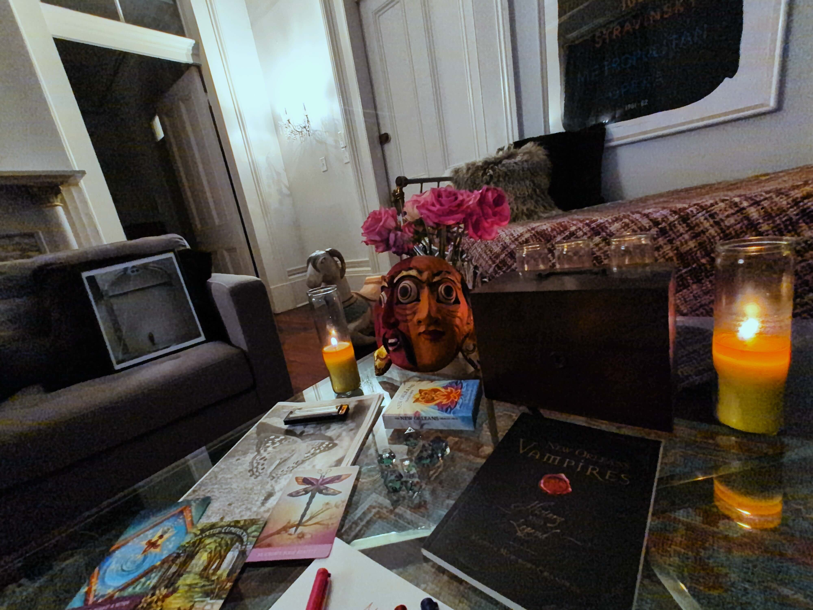

the third door cracks open...
beneath the dark moon the air grows thick with mystery
gm, my dear anon
an important aspect of magick is to sustain a state of bliss where no one can affect you
(i believe this is the only way true free will can be realized)
you reach this state only after completing all your shadow work
(the completely forgiviness and acceptance of yourself)
but even after this work, you may sometimes return to lower states
the world is a strong force constantly trying to pull you down
your ability to create your reality is directly tied to
your ability to keep yourself in high frequencies
there are many ways to enter this flow state
one of them is through music and dance
(songs are spells, so be mindful of anything you ingest)
both spoken and written words are the main tool for materization
(it took me a while to digest this part, but it's so fundamental
and it's one of the most powerful meanings behind holy books like the bible)
in this blissful state, you become one with your "little one"
(you are one with your past self and your future self)
(you unite with the parts of you that are truly beautiful, innocent, pure, and perfect)
(and no one else is more important than every one of you)
this is what i want you to try
be so free from anyone's opinion that your world is absolutely protected from harm
even if you are in a literal prison
(especially, if you live in a literal prison)
only then you can materize a better world for everyone else
therefore, today's work is to mediate about the impact of the words, spoken or written
tomorrow we will use this to create our reality
ah, you may ask, where are the vampires i promised?
well, vampires wil be one of the themes of this journey
(
i love them,
i grew up believing i was
buffy :))
but for today, i want to introduce another special trick of magick:
harvesting energy from the place you are in
(that's one of the reasons i've lived a nomadic life for many years now)
every place has a unique feeling that transports you to a certain state of mind
every time you arrive in a new place, it's like a fresh start, a blank canvas
and i like to use this energy to fuel my stories
for this experiment, i am harvesting the energy from
one of the coolest places you can be as an
oficial magi:
new orleans, the city of vampires, and ghosts, and jazz
(get ready to explore with me in the following chapters)
